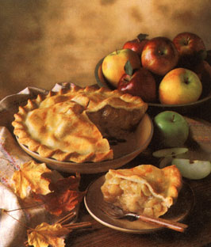

With Alar gone, they're welcome back.
Autumn positively sings of apples. A visit to an orchard at this time of year affords a wonderful assault on the senses: The soft days are redolent with the winy fragrance of ripe fruit and the woody smell of smoke lingering in the damp air. People have been munching on apples for about 750,000 years, ever since the food gatherers of early Paleolithic times discovered sour crab apples in the Caucasus Mountains in southwestern Asia. Today, the fruit's tantalizing fragrance and tart, sweet, spicy taste have made it one of the most popular in America.
Apples are, of course, famous for how they taste encased in pie crust, but cooking with them doesn't have to stop there. With a little imagination, you can use this versatile fruit not only in sweet dishes, but throughout the meal-from hors d'oeuvres to dessert and all the courses in between.
And the options don't end with the recipes. More than 7,000 varieties to choose from-each with its own unique flavor-make cooking with apples a true culinary adventure.
Pastry for a double pie crust
1 tablespoon raspberry jam
12-ounce package frozen raspberries
1-1/2 tablespoons cornstarch
1/4 cup sugar
1/4 cup all-purpose flour
1/3 cup sugar
4 large cooking apples
Preheat oven to 425°F. Grease a 9-inch or 10-inch pie plate. Roll out half the pastry and fit it into pie plate. Smooth raspberry jam over bottom of pie shell. Refrigerate. Thaw and drain raspberries, reserving liquid. Pour juice into small saucepan, stir in cornstarch and 1/4 cup sugar. Bring cornstarch mixture to a boil over low heat, stirring until juice is thick and smooth. Remove from heat, stir in drained raspberries, and cool. Combine flour and remaining 1/3 cup sugar. Peel, core, and cut apples into 1/4-inch slices. Alternate layers of apple slices and flour mixture in chilled pie shell. Top with cooled raspberry mixture. Roll out top crust, place over filling, trim and flute edges. Make 3 steam slits in center. Bake at 425° for 15 minutes, reduce heat to 350° and bake for 30-40 minutes longer, until crust is golden brown. If edges start getting too brown, cover with aluminum foil. Allow pie to set before serving. Serve warm. Serves 8.
Forget the bread and crackers-substitute apple rings instead. Topped with a variety of spreads, cheeses and meats, they bring a welcome change to the hors d'oeuvre platter.
Wash and core the apples and cut them into 1/4-inch to 1/2-inch slices. Choose from the following toppings:
Peanut butter and banana slices
Peanut butter with raisins
Peanut butter and crumbled bacon
Peanut butter and chopped dates or chopped nuts
Cream cheese with raisins and chopped nuts
Cream cheese with onion slices and smoked salmon (or sardines)
Cream cheese with chopped fresh chives
Cream cheese and chutney
Cream cheese, cinnamon and honey
Cream cheese with diced ham (or bologna), curry powder and chutney
Liverwurst
Refried beans or mashed baked beans
Mashed blue cheese
Corned beef with a slice of pickle
Mozzarella, Cheddar or Muenster cheese topped with a slice of tomato and popped under the broiler for 1 minute to make mini apple-slice pizzas
4 cups fresh spinach leaves
1 small head Boston or Bibb lettuce
2 tart, medium eating apples
1/4 cup chopped walnuts
1/2 cup plain yogurt
1 tablespoon honey
1/8 teaspoon ground turmeric
1/8 teaspoon ground ginger
1/8 teaspoon ground coriander
Place spinach and lettuce in a salad bowl. Add apples (cored and sliced) and walnuts. In a separate bowl, blend together yogurt, honey and spices. Toss with salad. Serve immediately. Serves 4.
1/4 cup butter or margarine
1 medium onion, chopped
1 medium carrot, chopped
1 small celery rib, chopped
1 medium cooking apple
2 tablespoons all-purpose flour
3 teaspoons curry powder
5 cups chicken stock
1 cup cooked rice
1/2 cup heavy cream
Melt the butter in a 3-quart saucepan, and sauté onion, carrot and celery for 5 minutes. Peel, core, and dice apple. Stir into vegetables; saute for 5 minutes. Stir in flour and curry powder. Gradually pour in stock and bring to a boil. Reduce heat, cover pan, and simmer for 20 minutes. Add rice and continue simmering for 10 minutes more. Remove from heat. Pour heavy cream into a small saucepan and scald. Add to soup and serve. Serves 4-6.
6 medium sweet potatoes
2 tart, medium cooking apples
1 lemon
1/2 cup butter
1/2 teaspoon ground nutmeg
1/2 cup maple syrup
Scrub potatoes and place in a pot of boiling water. Cook for 20 minutes, until they can be easily pierced with a fork. Cool and peel. Preheat oven to 350°F. Cut potatoes into 1/2-inch slices. Arrange a single layer of potatoes in a greased 9-inch by 13-inch baking pan. Peel, core, and slice apples about 1/2-inch thick. Toss with the juice of the lemon. Place a single layer of apples over potatoes. Continue layering until all apple and potato slices have been used. Melt butter in a small saucepan, stir in nutmeg and maple syrup. Pour over the layers. Place in oven and bake for 30 minutes. Serve hot. Serves 8-10.
3 tablespoons olive oil
1 large onion, sliced
4 garlic cloves
2 teaspoons dried basil
1 teaspoon dried oregano
1/2 teaspoon ground allspice
1/4 teaspoon ground black pepper
2 bell peppers, sliced
2 medium zucchini, sliced
6 ripe tomatoes, quartered
2 medium cooking apples, diced
Heat olive oil in a large skillet and add onion. Crush garlic directly into skillet and sauté for 5 minutes. Sprinkle in basil, oregano, allspice and black pepper. Stir bell peppers into onions, and sautj for 10 minutes. Add zucchini and tomatoes to the skillet. Stir, cover, and simmer for 20 minutes. Add apples to the ratatouille, cover, and simmer for 15 minutes. Serve hot. Serves 8.
2 tablespoons vegetable or olive oil
1 medium onion, chopped
1 red or green bell pepper, chopped
1 garlic clove, minced
1 medium cooking apple
4 large eggs
2 tablespoons water
t/z teaspoon dried sage
t/4 teaspoon ground mace
i/8 teaspoon ground black pepper
1/2 cup grated Cheddar, Monterey lack or mozzarella cheese
Heat oil in a medium skillet. Add onion, pepper and garlic, and cook over low heat until onion is tender, about 15 minutes. Peel, core, and thinly slice apple. Add to vegeta bles and cook for 5 minutes. Beat eggs with water, sage, mace and pepper. Pour over vegetables. Sprinkle with grated cheese. Cover pan and cook over low heat for to minutes, until eggs are set and cheese has melted. Serve at once. Serves 2-4.
2 tablespoons vegetable oil
2 medium onions, thinly sliced
2 garlic cloves, minced
1 medium red cabbage, shredded
4 tart cooking apples
2-1/2 pounds kielbasa sausage
1 bay leaf
1 teaspoon dried thyme
1/2 teaspoon ground mace
1/2 teaspoon freshly ground black pepper
1/2 cup beef, chicken or vegetable stock
1 tablespoon wine vinegar
Heat oil in a 4-quart kettle and sauté onions and garlic for 5 minutes. Stir cabbage into onions and sauté for 5 minutes. Peel, core, and slice apples and toss into pot. Stir all together. Place sausage in pot with vegetables. Add bay leaf and sprinkle with thyme, mace and black pepper. Add stock and vinegar, cover pot, and bring to boil. Reduce heat and simmer for 30-40 minutes.
Remove sausage and cut into serving-size portions. Arrange vegetables on a warm serving dish with sausage on top. Serves 4-6.
1 cup butter or margarine
1 cup brown sugar
1/2 cup molasses
2 large eggs
1 cup applesauce
2 cups all-purpose flour
2 teaspoons baking soda
2 teaspoons ground ginger
1 teaspoon ground cinnamon
Preheat oven to 350°F. Grease and flour a 9-inch by 13-inch baking dish. Melt butter over low heat. Pour into a medium-size bowl. Beat in sugar and molasses. Add eggs one at a time and beat. Beat in applesauce. Sift flour, baking soda, ginger and cinnamon into applesauce mixture and stir well to combine thoroughly. Spoon into baking dish and bake for 35 minutes, or until a skewer inserted in the middle comes out clean. Remove from oven; cool for 5 minutes. Turn onto a wire rack and allow to cool completely. Serve with whipped cream or vanilla ice cream. Serves 18.
1 large cooking apple
2 large eggs
1/2 cup presifted all purpose flour
1 /2 teaspoon baking powder
1 /2 teaspoon baking soda
1 /2 teaspoon ground nutmeg
1/2 teaspoon ground cinnamon
Margarine or vegetable oil for frying
Peel, core, and grate apple into a medium-size bowl. Separate eggs. Drop the whites into a large bowl, the yolks into a small one. Whisk yolks until light and stir into grated apple. Add flour, baking powder, baking soda and spices, and stir to combine. Beat egg whites until stiff and fold into apple mixture. Heat margarine or vegetable oil, 1/4-inch deep, in a hot skillet. Drop batter by the heaping tablespoonful into hot fat. Cook for 1 minute, turn, and cook 1 minute more. The fritters should be golden brown. Drain on absorbent paper and serve immediately or keep warm in a low oven. Serves 2-4.
1/2 cup butter, softened
1 /4 cup white sugar
1 teaspoon lemon juice
1 cup presifted all-purpose flour
1 pound cream cheese
1/2 cup brown sugar
1 large egg
1 tablespoon vanilla extract
2 large cooking apples
1/2 cup white sugar
1 tablespoon ground cinnamon
Cream butter, 1/4 cup white sugar and lemon juice together in a large bowl. Stir in flour until well blended. Press the dough onto the bottom and about 1-1/2 inches up the sides of a 9-inch springform pan. Refrigerate.
Preheat oven to 425°F. Place cream cheese and brown sugar in a mixing bowl, and beat until fluffy. Add egg and vanilla. Beat until smooth. Peel, core, and slice apples into 1/4-inch pieces. In a large bowl, combine 1/2 cup white sugar and cinnamon. Add apple slices and toss until coated. Pour cream cheese filling into prepared crust and cover with sugared apple slices. Bake for 15 minutes at 425°, reduce heat to 350°, and continue baking for 40-45 minutes. Remove from oven and cool. Use a knife to loosen the cake before releasing the spring and lifting the sides from the bottom of the pan. Serves 10-12.
Editor's note: This article was adapted from The Apple Cookbook, by Olwen Woodie. (Storey Communications, Schoolhouse Rd., Pownal, VT 05261; $7.95 plus $2.75 shipping and handling).
|
 |
|
|